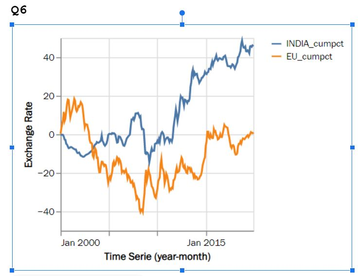

Q7
we can observe that cumulative percentage change of India increases throughout the years where as in comparison . Europe cumulative percentage change decreases throughout the years.
both graphs experience drastic fluctuations showing that the foreign exchange rate is not stable
So we can say that ,it is illogical to have a probability that falls below 0 or rises above 1, any cumulative distribution function is always constrained by the values of 0 and 1, accordingly. Since we are accumulating the probabilities for each event, It also has to increase, or at least not decrease as the input x incre
es. The CDF is a non-increasing function, or one that increases monotonically, due to the latter characteristic. Finally, it is argued that a CDF is a continuous function when its graph essentially has no "gaps."
